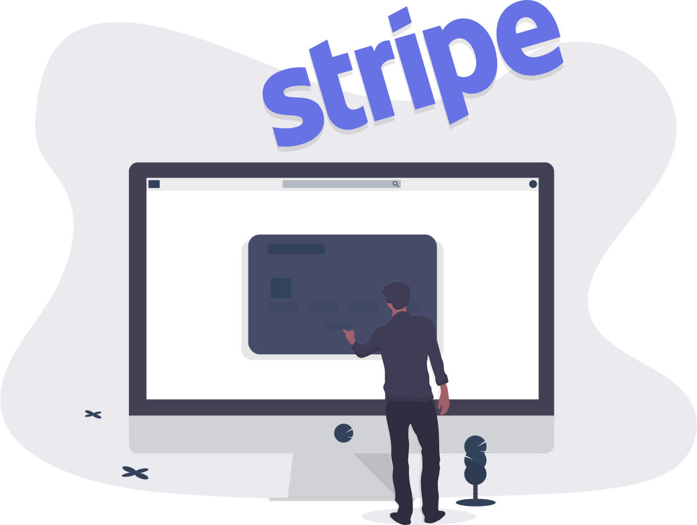
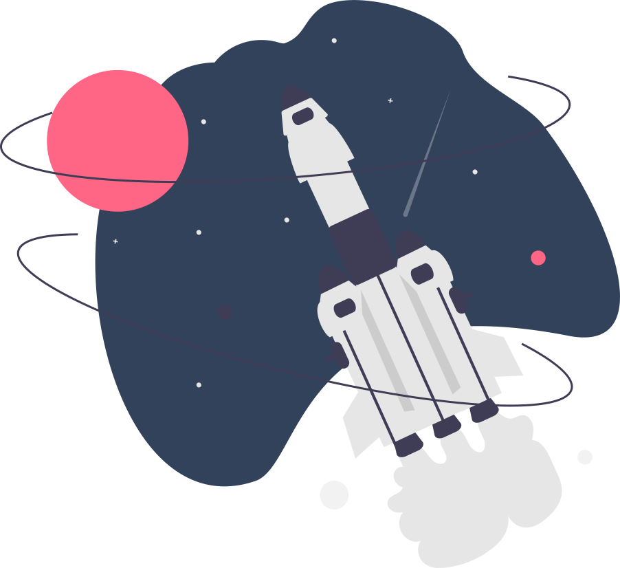
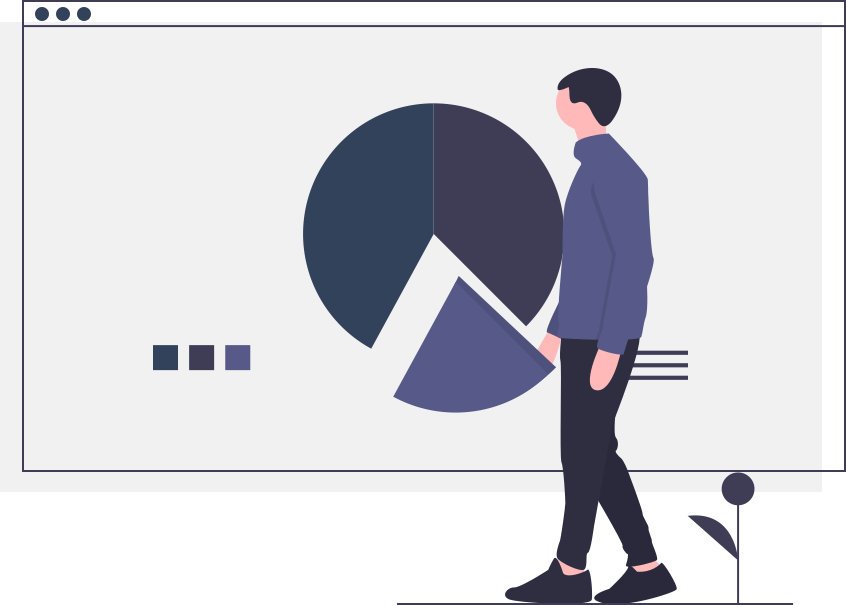
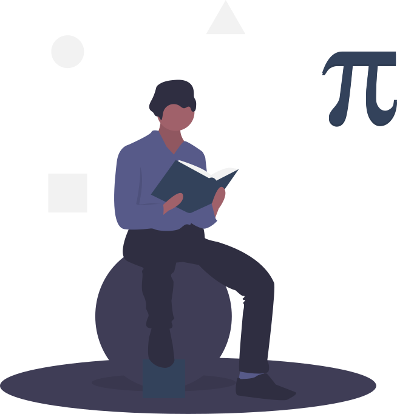
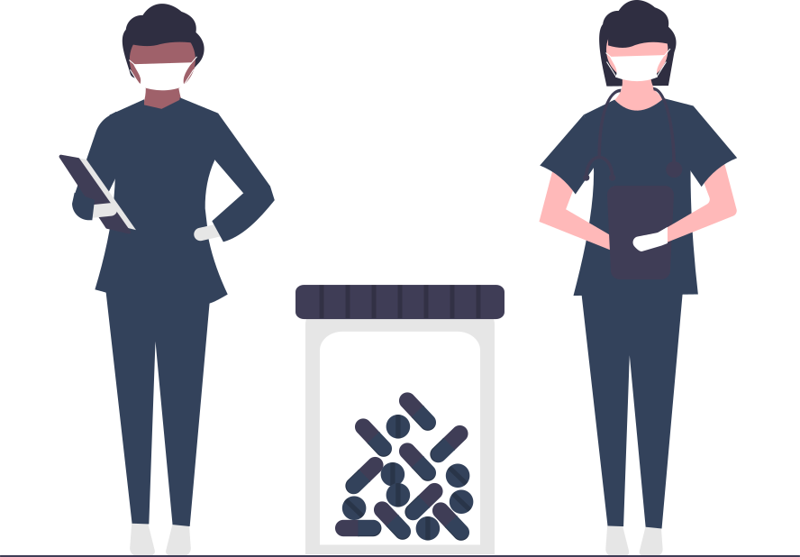

Bachelor of Technology in Computer Science is a
4-year degree course offered to students at the undergraduate level. It aims to provide students with intricate
knowledge of computer technologies and functional operations along with programming, coding, Web and database
development.
B.Tech in Information Technology
Bachelor of Technology in Information Technology is
a 4-year degree course offered to students at the undergraduate level. It aims to provide students with
intricate knowledge of computer technologies and functional operations along with knowledge about hardwares.

B.Tech in Mechanical Engineering
Bachelor of Technology in Mechanical Engineering is
a 4-year degree course offered to students at the undergraduate level. It aims to provide students with
intricate knowledge of the various mechanical devices and how work is carried out in big firms.
B.Tech in Electrical Engineering
Bachelor of Technology in Electrical Engineering is
a 4-year degree course offered to students at the undergraduate level. It aims to provide students with
Electrical Equipments and Circuits.

B.Tech in Aerospace Engineering
Bachelor of Technology in Aerospace Technology is a
4-year degree course offered to students at the undergraduate level. It aims to provide students with intricate
knowledge of atmosphere, air vechicles and rockets.
B.Tech in Mathematics and Computing
Bachelor of Technology in Mathematics and Computing
is a 4-year degree course offered to students at the undergraduate level. It aims to provide students with
intricate knowledge of computer technologies and functional operations along with programming, coding, Web and
database development along with various mathematical topics.

B.Sc Data Science
Bachelor of Science in Data Science is a 3-year
degree course offered to students at the undergraduate level. It aims to provide students with intricate
knowledge of computer technologies and machine learning and artificial intelligence technologies.

B.Sc Mathematics
Bachelor of Science in Mathematics is a 3-year
degree course offered to students at the undergraduate level. It aims to provide students with intricate
knowledge of various mathematical topics along with computer skills which help the students to develop critical
thinking.

B.Tech in Biotechnology
Bachelor of Technology in Mathematics and Computing
is a 4-year degree course offered to students at the undergraduate level. It aims to provide students with
intricate knowledge of various Biological Techniques that can change the future of our world.